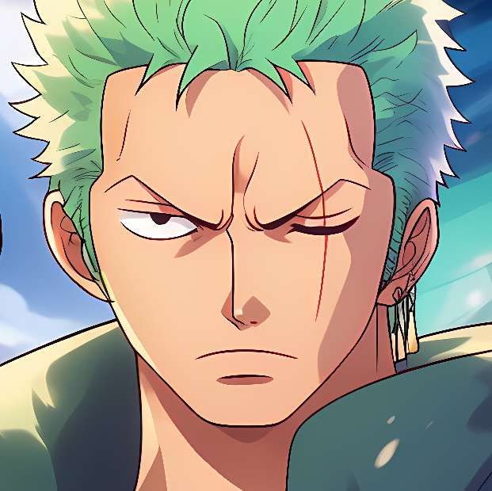

Choose Your Pirate
-

-

-

The captain of the Straw Hat Pirates, Luffy’s dream is to become the Pirate King. His rubber body and fearless nature make him unstoppable. He values freedom, friendship, and adventure above all else.

The right-hand man of Luffy, Zoro is a master swordsman known for his “Three Sword Style.” He aims to become the world’s greatest swordsman and never loses sight of his promise to his captain.
The Straw Hat crew’s gentleman cook, Sanji fights using his flaming kicks. He’s devoted to his craft, respects women deeply, and keeps the crew well-fed on every adventure.